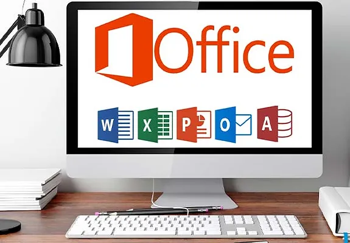

Bonjour, merci de visiter mon site ! Explorez-le pour découvrir mon profil et l'ensemble de mes compétences.
Je m'appelle Florent ROGER et je suis actuellement en BTS SIO (Services Informatiques aux Organisations) au Campus Saint-Aspais à Melun. En dehors de mes études, je suis passionné de football, en tant que joueur et coach auprès des jeunes catégories.
CV et Lettre de Motivation :
Référentiel BTS SIO SISR :
Le BTS SIO (Services Informatiques aux Organisations) est un programme de niveau Bac+2 qui forme des informaticiens
à la fois compétent en développement (SLAM) et en administration/maintenance de réseaux informatiques (SISR).
Voici le lien vers le référentiel du BTS SIO : Référentiel BTS SIO
Mes Compétences :
- Maîtrise des logiciels bureautiques

- Conception et administration de sites internet
- Manipulation des outils de communication en ligne
- Maîtrise des langages HTML et CSS
- Manipulation Linux
Sérious Games:
Le Sérious Games, qu'est-ce que c'est ? Le Sérious Games, ou "jeu sérieux", est un exercice de simulation de création
d'entreprise. Il a été prévu dans mon cursus scolaire en groupe, mélangé de classe d'SIO et de commerce, la création d'une entreprise.
Nous devions choisir un PDG, un DSI (Directeur des Services Informatiques) et un responsable commercial.
2022
Les consignes étaient d'innover un produit textile, simuler des démarches auprès des banques pour des prêts, trouver un local et faire de la publicité.
Dans notre cas, nous avons opté pour la création de bonnets personnalisables avec des pompons interchangeables. Ma mission était de créer le site web de l'entreprise en collaboration avec d'autres étudiants en SIO, tandis que les étudiants en commerce s'occupaient des aspects économiques, juridiques et managériaux de l'entreprise.
Cette expérience de simulation d'entreprise a été très enrichissante, et j'ai appris à travailler en équipe dans un temps imparti.
2023
La consignes était de créer, d'innover un produit. Nous avons choisi de faire des sacoches avec batterie à induction. Elle permet de recharger n'importe quel appareil éléctronique ranger a l'interriere. Mon travail était la création du site web, de la publicité et du produit, avec mes camarades SIO. Les élèves de commerce s'occupaient des aspects économiques, juridiques et managériaux de l'entreprise.
Ce projet de simulation d'entreprise a été une nouvelle fois une bonne expérience, ou j'ai peu approndir ma capacité a travailler en équipe.
Rapport de stage :
La première période de formation s'est déroulée dans l'entreprise d'équipementier sportif située à Vaux-le-Pénil. J'y ai réalisé diverses tâches telles que la création d'une page web valorisant les produits PUMA sur le site de l'entreprise. À l'aide du logiciel Illustrator, j'ai également confectionné des maillots et des logos pour les clients. De plus, j'ai communiqué avec les clients par e-mail et programmé des enlèvements pour que les livreurs viennent chercher les colis et les livrent aux clients.
Ma période de stage, s'est déroulée avec un technicien auto-entrepreneur qui se déplace dans le 77 et 94 pour aller dépanner ses clients.
Durant les semaines passées avec lui, je les assister et aider dans ses différentes missions, comme le remplacement de pièces de PC portables, de téléviseurs ou encore de caisses de supermarchés.
Ma 2ᵉ période de stage s'est déroulée au service informatique de la Mairir de Brie Comte Robert. Il m'a été confié un projet de réaliser un audit sur le réseau wifi de la ville. A l'aide de l'outil NetSpot, je me suis déplacé dans les nombreux sites administratifs de la commune afin d'analyser la couverture internet, pour compléter le rapport d'audit.
Veille technologique :
La veille technologique est un processus qui consiste à surveiller et à recueillir des informations sur les avancées, les innovations, les tendances et les évolutions dans le domaine de la technologie, de la science et de l'industrie. L'objectif de la veille technologique est de rester informé des dernières avancées technologiques et scientifiques.